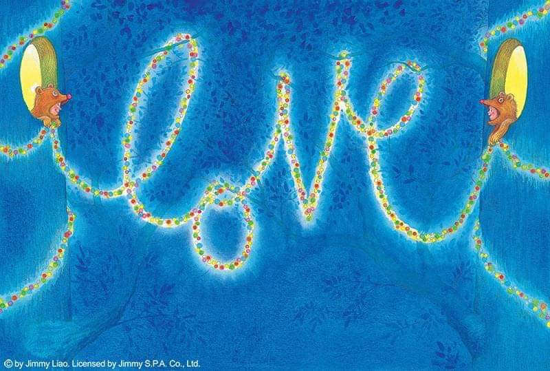

LLIB (900 - 949)

- Hãy trả thêm $10 nữa để có được chỗ ngồi tốt nhất trong một cuộc thi đấu thể thao hoặc trong buổi hòa nhạc.
- Hãy phát các tài liệu về bài thuyết trình của con sau buổi diễn thuyết, đừng bao giờ phát trước đó.
- Con đừng mua đồ của một người bán hàng thô lỗ, dù con có cần món đồ đó đến đâu.
- Hãy tiêm phòng đầy đủ.
- Lo lắng sẽ khiến con mất ngủ. Khi con vướng bận về một việc nào đó, trước khi đi ngủ, con hãy liệt kê ra ba điều mà con có thể thực hiện vào ngày hôm sau để giải quyết vấn đề ấy.
- Hãy mua một chiếc ô màu đỏ. Như thế con có thể dễ dàng tìm thấy chiếc ô của mình, hơn nữa nó sẽ cho con chút ít màu sắc tươi vui trong một ngày mưa.
- Thuê nhân viên bởi sự phán đoán của họ thì tốt hơn là bởi tài năng của họ.
- Con hãy yêu thương một ai đó không đáng được yêu thương.
- Khi con có ý từ chối, hãy nói điều đó ra một cách rõ ràng.
- Con đừng ăn trước khi phát biểu.
- Hãy tặng cho bọn trẻ những món đồ chơi kích thích trí tưởng tượng của chúng.
- Hãy nhớ rằng tính cách của một đứa trẻ cũng giống như một món súp ngon vậy. Tất cả đều được làm ở nhà.
- Đừng bao giờ mở một nhà hàng.
- Khi con mua thứ mà mình cần, hãy mua một lần thôi, và mua thứ tốt nhất mà khả năng kinh tế của con cho phép.
- Ngay sau khi con kết hôn, hãy bắt đầu tiết kiệm tiền cho con cái học hành về sau này càng sớm càng tốt.
- Hãy chối bỏ và chỉ trích những định kiến dựa trên chủng tộc, giới tính, tôn giáo, hay tuổi tác.
- Hãy chọn hàng ghế ngồi gần cửa thoát hiểm trên máy bay. Con sẽ có chỗ để chân rộng rãi hơn.
- Hãy sẵn lòng hạ thấp giá trị của mình để có được thứ khác có giá trị hơn.
- Con có thể ăn mặc khác thường, nhưng hãy nhớ rằng càng ăn mặc lạ kỳ thì con càng phải trở nên hay ho hơn.
- Cuộc sống rất ngắn ngủi. Con hãy ăn nhiều bánh pancake và ăn ít bánh gạo thôi.
- Hãy cẩn thận trước một cuộc đời vô mục đích.
- Hãy quyên góp cho Hội chữ thập đỏ.
- Hãy ghi nhớ quy tắc ABC trong thành công: Ability (Năng lực), Breaks (Thư giãn), Courage (Can đảm).
- Một cuộc đời phong phú thì vẫn tốt hơn là việc sống lâu.
- Hãy nghi ngờ năng lực của một người quản lý cứ luôn lên lịch họp thay vì đưa ra quyết định.
- Hãy luôn mang theo 3 tấm danh thiếp trong ví.
- Dù tình huống có ra sao, hãy phản ứng một cách có đức hạnh.
- Để đảm bảo một năm thành công, con phải bắt đầu từ ngày 1 tháng 1.
- Đừng cho ngựa hay anh rể ăn quá nhiều.
- Hãy là người làm căn phòng trở nên sáng sủa hơn chỉ bởi vì con bước chân vào đó.
- Hãy ghi nhớ nghiên cứu của William James rằng nguyên tắc sâu xa nhất trong bản năng của con người là sự khao khát được công nhận.
- Hãy mua các sản phẩm của những học sinh, sinh viên gây quỹ cho các dự án ở trường học.
- Hãy dè chừng trước những kẻ “chỉ có nói mà không có làm.”
- Hãy mượn một chiếc hộp đầy những chú cún con và đưa chúng đến thăm trại dưỡng lão trong một buổi chiều. Con hãy lùi lại và nhìn ngắm những nụ cười.
- Hãy đọc lại tác phẩm “Walden – Một mình ở trong rừng” của Thoreau.
- Luôn có ai đó xem con như là một hình mẫu trong cách cư xử. Con đừng làm cho họ thất vọng.
- Hãy tham gia các buổi giới thiệu mai mối. Cha gặp mẹ con nhờ thế đó.
- Hãy luôn nhớ đến những người yêu thương con.
- Hãy trở về nhà vào những dịp lễ, tết.
- Đừng nghiêm trọng hóa các rắc rối của mình.
- Hãy gọi cho cha.
- Đừng bao giờ mua một chiếc bàn trà mà con không thể gác chân lên đó được.
- Hãy nói điều tích cực vào thời điểm sớm nhất mỗi ngày.
- Hãy tin vào phép màu nhưng đừng cậy vào chúng.
- Dù tình thế có ra sao, hãy nhớ rằng khi tỏ ra nhã nhặn thì con không bao giờ thua được.
- Đừng bao giờ mở tủ lạnh khi con đang thấy chán.
- Hãy làm báo cáo chi phí ngay sau khi con đi công tác về.
- Hãy sở hữu ít nhất một chiếc quần hay áo có in hình chuột Mickey trên đó.
- Hãy cảm thấy biết ơn vì con được sinh ra ở một đất nước vĩ đại.
- Khi con thuê phòng khách sạn, đừng chọn phòng nằm gần máy bán hàng tự động hoặc tủ đá.
Comments